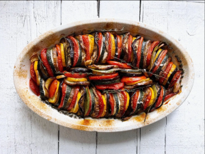

Tian de légumes
Recept uit de film Ratatouile, van Janneke Vreugdenhil.
Een tian de légumes is een ovenschotel van, op paprika na, ratatouillegroenten. Tian is overigens tevens de Provençaalse naam voor een aardewerken schaal, hetgeen een tikje verwarrend kan zijn omdat ook andere gerechten die erin worden gemaakt soms tian heten. Maar goed, een klassieke Provençaalse tian bestaat toch meestal uit schijfjes aubergine, courgette en tomaat die dicht op elkaar gepakt láng garen met veel olijfolie en knoflook. Dat woordje lang is van groot belang hier, maar dat leg ik hiernaast wel uit. Nu eerst nog heel even terug naar die houten tafel in het grind onder de druivenranken.
Waarom ik het grappig vind dat u de tian aanzag voor een ratatouille? Wel, u heeft vast de film Ratatouille weleens gezien. Maar wist u dat het naamgevende gerecht uit deze heerlijke Pixar-film, het gerecht dat restaurantcriticus Anton Ego in één hap teleporteert naar de keuken van zijn moeder en hem doet smelten voor de kookkunsten van rat Remy, helemaal geen ratatouille is maar een tian? Zo zie je maar. Kom, schenk nog eens bij. Wat een avond hè.

Ingredienten
Voor 4 personen:
- 2 uien
- 8 tenen knoflook
- 8 el olijfolie
- 8 takjes verse tijm
- 4 blaadjes verse laurier
- 2 aubergines
- 2 courgettes
- 5 - 6 tomaten
Bereidingswijze
Verwarm de oven voor op 180 graden. Pel de uien en snijd ze in ringen. Pel de tenen knoflook. Snijd 2 tenen in dunne plakjes en halveer de overige 6 in de lengte. Ris de blaadjes van 2 takjes tijm.
Verhit 2 eetlepels olijfolie in een koekenpan en voeg de uiringen, de tijm en een snuf zout toe. Laat de uien zachtjes 10 minuten fruiten. Voeg de plakjes knoflook toe en fruit ze een paar minuten mee. Snijd intussen de aubergines, courgettes en tomaten in plakjes van ongeveer een halve centimeter.
Verdeel de gefruite uien over de bodem van een passende, lage ovenschaal. Vul de schaal vervolgens met plakjes groente; zet ze rechtop, om en om en strak tegen elkaar aan. Dus schijfje aubergine, schijfje courgette, schijfje tomaat, schijfje aubergine, enzovoort. Stop er hier en daar een half teentje knoflook tussen, net als de resterende takjes tijm en de laurierblaadjes. Bestrooi de schotel niet te zuinig met zout en versgemalen zwarte peper en sprenkel er de rest van de olijfolie over.
Schuif de schaal minimaal 5 kwartier, maar liefst nog wat langer in de oven. Mocht de bovenkant van de tian wat donker dreigen te worden, dan kunt u er tegen het einde altijd een stuk aluminiumfolie of bakpapier bovenop leggen ter bescherming. Laat de schotel 10 – 15 minuten staan voor u hem serveert.
Notities
Een basisrecept, maar eerste keer dat ik het maakte, smaakte het nogal flauw. Needs some work.